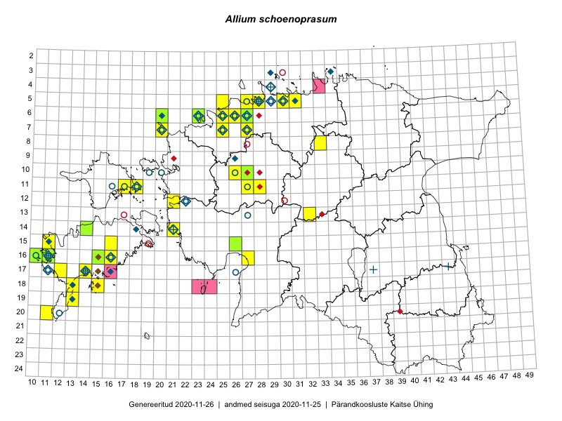

Allium schoenoprasum
Uuendatud: 2016-12-02
Kaardile koondatud taksonid: Allium schoenoprasum L.

Kaart põhineb 39 vaatlusel. Taksonit on leitud 26 ruudust.
Kuvatud viited 20 esimesele andmebaasikirjele, ülejäänud PlutoFis
- Toomas Kukk, Peedu Saar, Kersti Tambets, Sten Mander, Janika Sammasto: 2015-08-05: 17-14: ala
- Rein Kalamees: 2015-08-09: 05-31: ala
- Toomas Kukk: 2015-06-19: 06-27: ala
- Toomas Kukk: 2014-06-18: 19-13: ala
- Toomas Kukk: 2014-06-19: 18-13: GPS punkt
- Jana-Maria Habicht, Ester Valdvee: 2015-05-01: 08-33: ala
- Eeva-Maria Jeletsky, Tarmo Niitla: 2015-06-17: 11-17: ala
- Eeva-Maria Jeletsky, Tarmo Niitla: 2015-06-17: 11-18: ala
- Mari Reitalu, Triin Reitalu: 2014-08-15: 20-11: ala
- Erkki Otsman, Sergei Smirnov: 2015-06-26: 05-28: ala
- Mari Reitalu, Sirje Azarov: 2015-05-09: 17-14: ala
- Mari Reitalu, Triin Reitalu: 2015-05-05: 17-12: ala
- Oliver Parrest: 2015-05-23: 18-15: ala
- Mari Reitalu, Oliver Parrest: 2015-07-16: 15-11: ala
- Mari Reitalu, Triin Reitalu: 2015-05-28: 16-11: ala
- Sirje Azarov, Mari Reitalu: 2015-05-22: 16-10: ala
- Sirje Azarov, Mari Reitalu: 2015-06-22: 16-10: ala
- Sirje Azarov, Mari Reitalu: 2015-08-22: 16-10: ala
- Sirje Azarov, Mari Reitalu: 2015-06-22: 16-11: ala
- Meeli Mesipuu: 2015-05-15: 11-18: ala